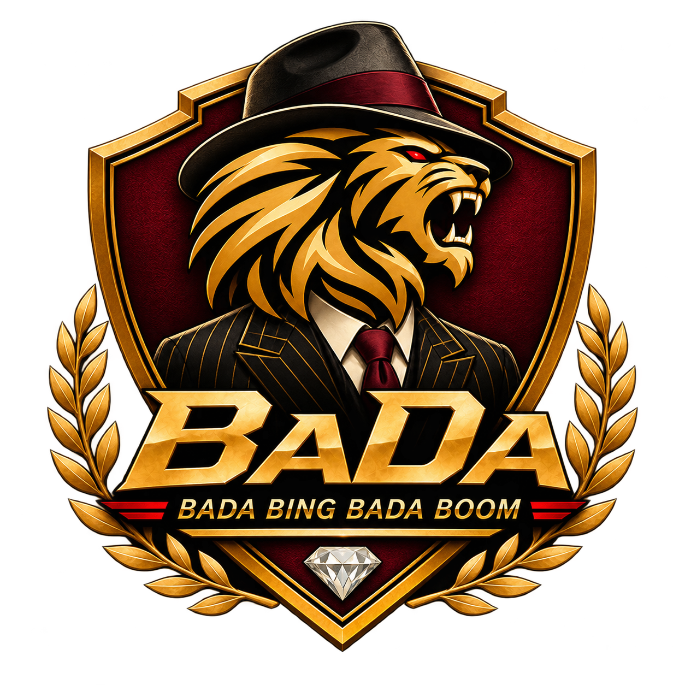

Take ownership
Decisions leaders can generally make independently.
A shared playbook for the people moving BaDa forward.
Know who owns what, how we decide, and how we win together.

Nine leaders. Complementary strengths. Shared accountability.
Own the outcome. Plan, decide, delegate, and follow through.
Make it happen, together. Collaborate, execute, and step in.
| LEADER | MAIN RESPONSIBILITIES | SUPPORT |
|---|
Find the right owner. Understand the scope. Get things moving.
No matching roles. Try another search or select “All roles”.
Autonomy works best when everyone knows where alignment matters.
Decisions leaders can generally make independently.
Bring the relevant owners together before acting.
A few simple principles to keep us coordinated and effective.
A short update from each area is enough. Keep the focus on coordination and accountability.
What was accomplished?
What are we currently working on?
Is anything blocked or requiring leadership support?
What should happen next?